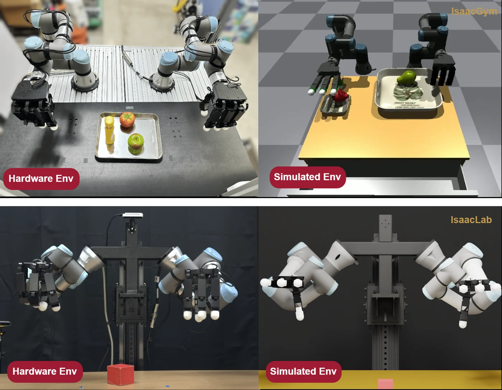

1 · Real2Sim
A digital twin built from the real robot
The robot has a UR3e and a UR3 arm, each with a 16-DoF Allegro Hand V4: 44 joints controlled by one policy. Its digital twin uses the robot description, object meshes scanned with a phone and cleaned into collision geometry, and drive gains calibrated against motion recorded on the hardware. The same system was built for two configurations: table-mounted and upper-humanoid.